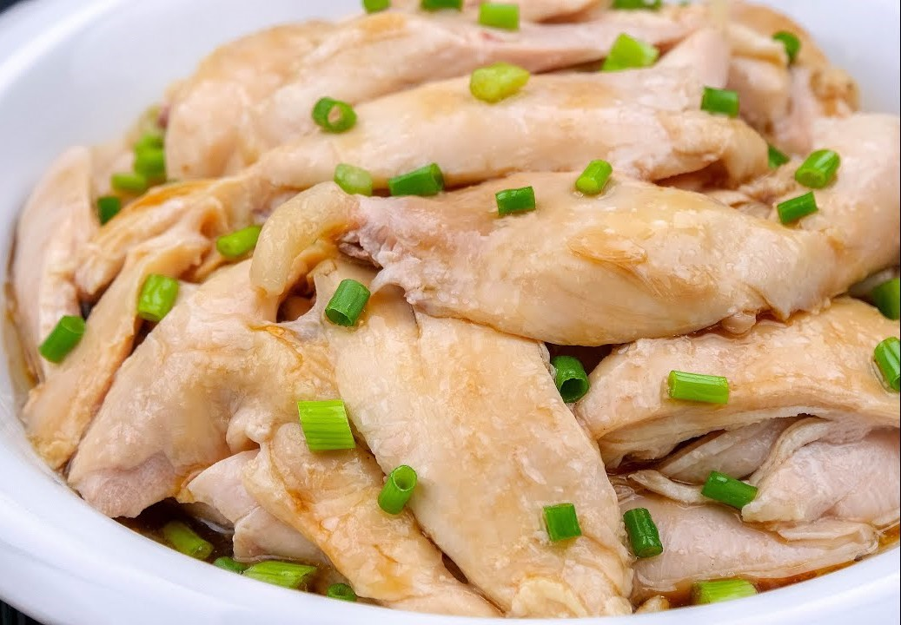

The Easy Recipe of Taiwanese cuisine
Three cups chicken

Ingredients
- 10-12 chicken thighs
- A large piece of ginger (120g)
- Sesame oil 0.7cups
- Rice wine 0.7cups
- Soy sauce 0.7cups
- Sugar 0.4cups
- Whole garlic 10-12
- One chilly pepper
- Some basil
Step
-
Heat up a pan with oil over the medium fire. Stir in prepared ginger until fragrant.(10-12mins)
-
Put the chicken thighs, garlic, and chilly pepper in the pan
-
Stir in prepared garlic until fragrant and put the seasonings in the pan.
-
Cover the pan and wait for the sauce become less put in some basil.
Chicken with scallion oil

Ingredients
-
Chicken drumsticks, or whole chicken legs/chicken thighs
-
Scallions & ginger
-
suger
-
Sesame oil
-
Scallions, a generous amount
-
Ginger paste, hand-grated or jarred
-
Light soy sauce
-
White pepper
Step
-
Poach the chicken with ginger slices and havlved scallion (cover with a lid for 12 mins)
-
Mix the scallion, soy sauce, Sesame oil, suger and white pepper
-
Put the seasonings and chicken together
Honey Pork Ribs

Ingredients
- Pork Ribs 800g
- Rock sugar 60g
- 3 tbsp soy sauce
- 1 tbsp rice wine
- 1/2 tbsp black vinegar
- Garlic 25g
- Water 400c.c.
Step
-
Poach the Pork ribs with rice wine
-
Fry the oil and add the rock suger in the pan wait until the it melt
-
Put the pork in it wait until the color of pork become brown
-
Add soy sauce, rice wine, black vinegar, water cover the pan(30-40mins)
-
Stir it with flares,until the sauce get thick
Braised pork rice

Ingredients
- 3 pieces of pork belly (about 1000g)
- 3 shallots
- 3 garlic
- 2 cups soy sauce
- 1 cup rice wine
- 1 tsp brown sugar
- 1 tsp rock sugar
- White pepper powder 1 tsp
- Five Spice Powder 1 tsp
- 1 star anise
- 2 bay leaves
- some eggs
Step
-
Finely chop shallots and mince garlic
-
Cut the pork into 1cm thick slices first, then cut into strips
-
Use an electric pot to steam some boiled eggs, and you can
marinate them together when you marinate the meat
-
Wait until the pot is hot, no need to put oil, put the pork
belly into the pot and spread it evenly
-
Stir-fry until the meat turns white. At this time, there
will be a lot of cloudy soup. Be patient and fry the meat juice dry
(you can also pour it out), and it will not have a pig smell
-
Continue to stir-fry the pork until transparent lard is
produced, then pour in shallots and stir-fry until the rich oily onion
is fragrant, then add minced garlic and stir-fry together
-
Push the pork to the side, add rock sugar and brown sugar,
heat until it melts and bubbles, and then stir the pork together to
make the caramel adhere evenly.
-
Pour in the soy sauce, fry the aroma of the soy sauce first,
add water and cook slowly, the aroma of the stewed meat will
be prominent
-
Add rice wine, move the marinated meat to a deep pot, add
water to submerge the pork, add white pepper powder, five-spice
powder, star anise, fragrant leaves, boiled eggs, boil and turn
to low heat to marinate for 1 hour
-
After marinating until it is colored, turn on high heat
to collect the sauce until the sauce is thick and has a shiny amber
color, that is, the marinating is complete.